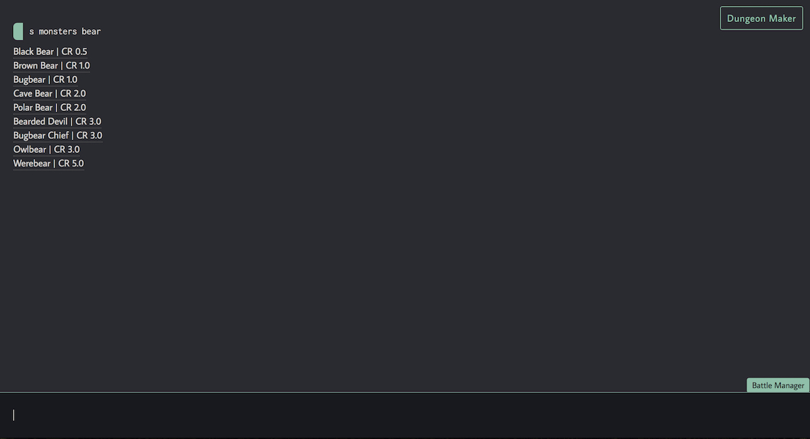
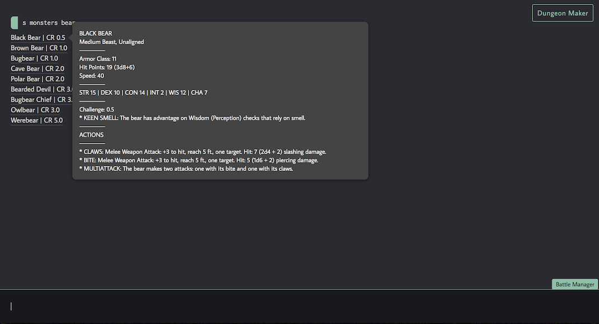
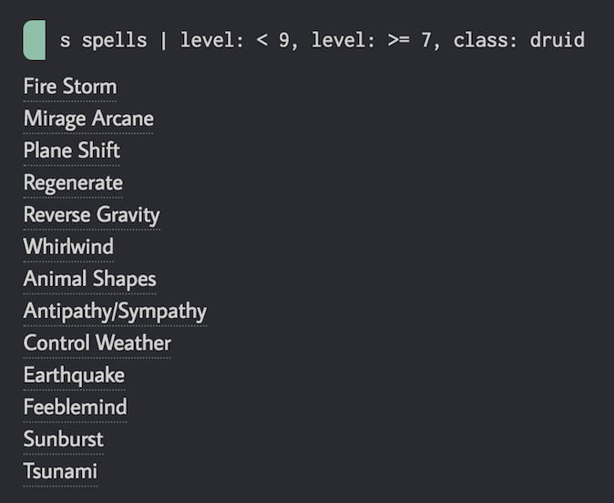
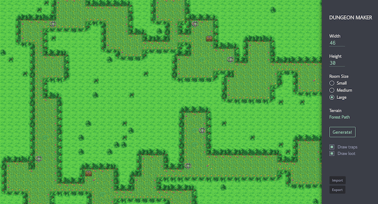
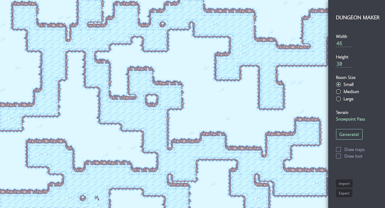
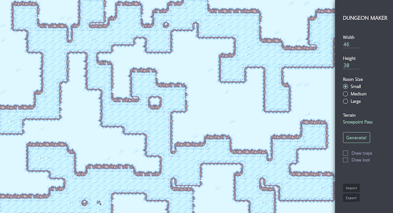
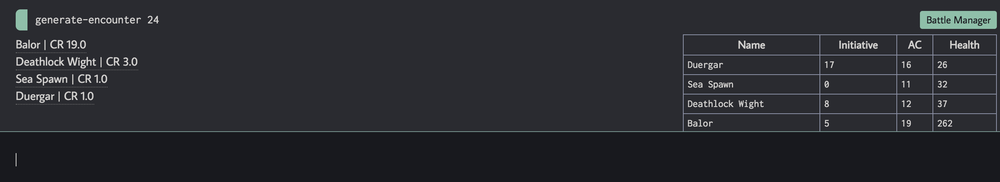
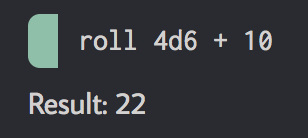

As an avid fan of Dungeons & Dragons (who sadly hasn't gotten to play in a while), I've always been figuring out a way to reduce the number of tabs I have to navigate between. I get to add a new spell? Great! Let's open all these pages with spells that sound cool and... ah... I need to pick an animal companion now, and there are all these options...
The next thing I know, I have 30 tabs open and we've barely started. It's not just me, either—and when Google Chrome can't keep up with us, then it's definitely time to change things up.
When I first learned how to program, I immediately set out to do a Dungeons and Dragons project on my own. It started off in Java, which was the first language I learned. In my naiveness, I began with an app where dungeon masters could keep track of players and make their own enemy encounters. It sounded fine on paper, except I had made it so inflexible to the point where adding enemies was a laborious process, and had hardcoded too many things to make changing player fields next to impossible.
I became exposed to more D&D online tools then, and realized other people had already done the same thing. A few months later, when I learned React, a new idea began to form: all these tools were for planning purposes, but nothing quite ever adapted to the organicness of a real campaign. The tools were fine and dandy up until the campaign started, and then the story is at the mercy of the players who tell it.
My first prototype was named Nat20, much to the distaste of my friends. The idea was that the user could type anything and the app would collate any and all matches, but I was using JSON to store the entire fifth edition compendium, which had enough content to be a textbook on its own. The app was slow, and it was difficult to search within a single category. It was alright when the page finally loaded, but it wasn't good enough to be used.
I kept pondering about this idea over the next year, and with more experience under my belt, revisited this app as my term project for Software Engineering. We'd learned SQL databases and more optimized algorithms at this point, and so, I tackled this project again with the love and support of three teammates. And this is what we built.
I created my own SQL database using BeautifulSoup and Python, which I used to scrape data about spells, monsters, and feats off the D&D wiki. Then, I wrote my own search commands to parse user input as search terms:
The interface is organized like a REPL, but we like to call it a SuperREPL. As you can see, there were multiple search results for the command "s monsters bear", which translates to "search in monsters the term bear". Note: s can also be substituted with search for new users.
The user can hover over any of the options to see more information about it:
If the text overflows the tooltip, the box is scrollable.
What if there was only one result, you ask? It just displays that information straight-up:

Here, note that I didn't have to specify a category first. If there's only one command after "search", then it automatically checks all of them.
What was more intriguing to me, however, was being able to filter results. Some websites out there do that, but through a complex menu of toggles and buttons to get exactly what I want. Inspired by rapid REPL commands, I also added more parsing features:
This search expression asks for all Druid spells in levels 7 to 8. If I wanted to, I could have also specified the spell school or components needed or any property, really—all the data is saved in the database as a separate column. Of course, this also works with other categories.
With this many results, we also implemented a feature that allows users to sticky search results to the sidebar.
Some dungeon masters like to spend hours building a map of their world for their adventurers. Some others prefer to keep it simple. No matter what, all dungeons start from some sort of inspiration, and we made a quick and easy graphical dungeon generator to do precisely this:
The user can change the dimensions, room size, and theme of the dungeon. They can also choose to include loot or traps. (Hovering over the treasure chest or bear trap icons will reveal more information about what they entail.) Also, did I mention you can change the theme?
 

There are a total of 14 themes, and the sprite resources came from Pokemon Mystery Dungeon, the namesake of this project. My partners built the backend for this generator (one can actually create an ASCII dungeon in the SuperREPL), but I made the entire frontend UI, including the algorithm that determines which blocks to use in which tiles. (I actually struggled a lot to come up with it, since it depends on whether its eight neighboring tiles are occupied or not.) In other words, I wrote a stupid amount of CSS.
In addition, there are also options to export the current tileset (saves to clipboard) and import a preexisting one (copy the same string in).
I also had a small role in our battle toolkit. The idea is that a dungeon master can instantly create an appropriately-difficult group of enemies (an "encounter") in a single command:
The number given is the cumulative level of every adventurer in the party, which follows recommended guidelines for encounter difficulty.
To the right, you can see a battle manager pop up with this encounter. Starting a new encounter will clear it and replace it with the new one. Here, each table cell is editable; the dungeon master can edit health away at will, or add notes about each monster's position or condition. The table can also be collapsed by pressing "Battle Manager" again.
My role in this feature was implementing the last bridges of algorithmic logic and cleaning up the UI.
There's a whole lot of other features that the final product had, such as a random NPC generator, which draws from an official Wizards of the Coast table. I didn't write these, but I was involved in planning out what features we needed to make a robust application that was the most helpful it could be.
One other small feature I did write, however, was a simple function to roll dice. I love the physical feeling of rolling dice as much as the next person, but sometimes there's an intense calculation that takes too long to count. When a player is in a pinch, or just needs to roll a quick investigation check, they can also use this roll command to do so. It supports simple arithmetic and allows multiple expressions to be joined together in the equation.
Some big questions we asked ourselves while building this included: who is this for? Some features are obviously only for the dungeon master, such as the dungeon generator. But for the most part, it's an all-in-one swiss army knife that any player can utilize—especially the search and roll functions, which were made to be as universal as possible.
Another question was, how user friendly is this? Yes, I included a help command with more written documentation. And yes, I added many equivalent search terms (such as "enemies" evaluating to the same as "monsters") to not box in users to specific syntax. But at the end of the day, I figured that learnability was the key element. It's not too difficult to become familiar with the SuperREPL commands, and all of my groupmates (one of whom has never played D&D) caught on pretty fast. It's a small investment, but it's one I was willing to let users make for increased efficiency down the line.
I did, however, keep user friendliness in mind as much as possible while designing the GUI for the dungeon generator. The default values alone would be enough to generate a proper map, but the SuperREPL was more difficult since the aim was for users to get mostly everything they needed to know without having to move their hand away from the keyboard.
I didn't get too deep into the code itself, but everything was written and designed to be as extensible as possible. Our REPL is bridged by a command handler, which talks to a database proxy, which communicates with the actual database itself. Each feature is in a different handler registered through the REPL, and it's extremely easy adding in a new command or changing the name of an old one. In addition, this application was extensively tested using both JUnit and command line tests.
If you'd like to see the code, don't be afraid to reach out!